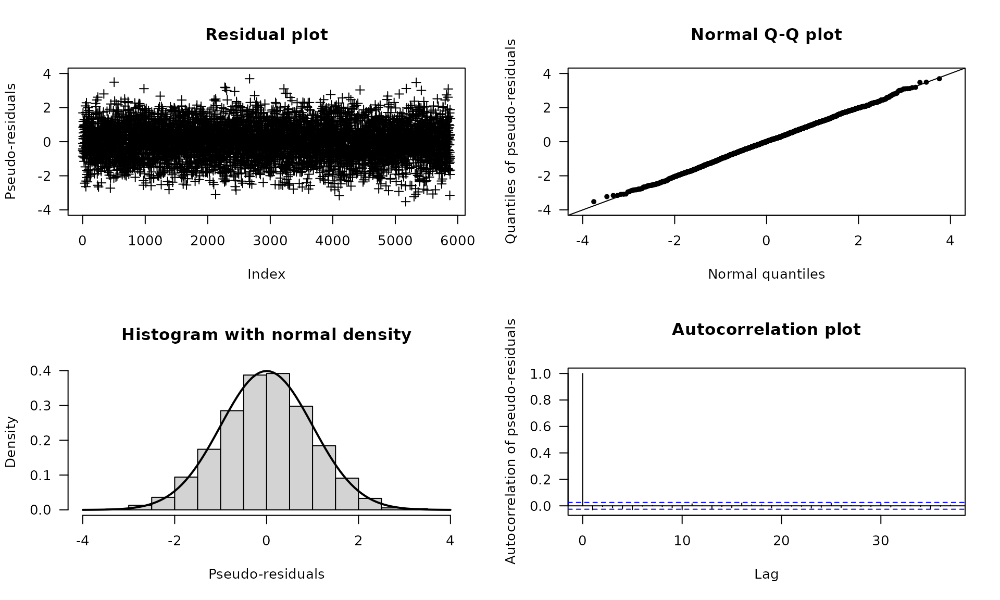

This vignette1 discusses model checking in fHMM, that means the task of verifying whether the fitted model describes the data well.
Model checking using pseudo-residuals
Since the observations are explained by different distributions (depending on the active state), model checking cannot be done by analyzing standard residuals. Instead, we consider “pseudo-residuals”. To transform all observations on a common scale, we proceed as follows: If has the invertible distribution function , then
is standard normally distributed, where denotes the cumulative distribution function of the standard normal distribution. The observations, , are modeled well if the so-called pseudo-residuals, , are approximately standard normally distributed, which can be visually assessed using quantile-quantile plots or further investigated using statistical tests such as the Jarque-Bera test (Zucchini, MacDonald, and Langrock 2016).
For HHMMs, we first decode the coarse-scale state process using the Viterbi algorithm. Subsequently, we assign each coarse-scale observation its distribution function under the fitted model and perform the transformation described above. Using the Viterbi-decoded coarse-scale states, we then treat the fine-scale observations analogously.
Implementation
In fHMM, pseudo-residuals can be computed via the
compute_residuals() function, provided that the states have
been decoded beforehand.
We revisit the DAX example:
data(dax_model_3t)The following line computes the residuals and saves them into the
model object:
dax_model_3t <- compute_residuals(dax_model_3t)
#> Computed residualsThe residuals can be visualized as follows:
plot(dax_model_3t, plot_type = "pr")
For additional normality tests, the residuals can be extracted from
the model object via the residuals() method.
The following lines exemplary perform a Jarque–Bera
test (Jarque and Bera
1987):
tseries::jarque.bera.test(residuals(dax_model_3t))
#>
#> Jarque Bera Test
#>
#> data: residuals(dax_model_3t)
#> X-squared = 2.2403, df = 2, p-value = 0.3262